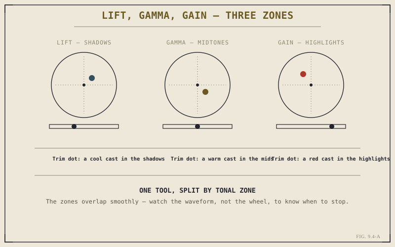

Chapter 9.3 gave you the space a grade gets built in. This chapter gives you the tool that almost always fills the first node in that space: primary correction, made through the three color wheels labeled Lift, Gamma, and Gain. These three wheels, together, are the single most-used tool on the Color page, and understanding what each one actually targets is the first real grading skill this part builds.
Three Zones of the Same Image
Lift, Gamma, and Gain each target a different range of an image's brightness. Lift affects the shadows most strongly. Gain affects the highlights most strongly. Gamma sits between them, affecting the midtones — everywhere skin, most set dressing, and most of what a viewer actually looks at tends to live. It's worth being precise about "most strongly," because these zones aren't hard, separate cutoffs; adjusting Lift does affect midtones and highlights too, just far less than it affects shadows, and the same overlap runs across all three. Thinking of them as three sliding, overlapping ranges rather than three walled-off sections is closer to how they actually behave.
What the Wheels Actually Control
Each wheel is really two controls in one. Dragging the wheel's center point away from the middle shifts that zone's color — the direction you drag sets the hue of the cast introduced, and the distance you drag sets its strength, the exact same logic the vectorscope from Chapter 9.2 uses to plot color. A separate luminance slider, usually beneath each wheel, raises or lowers that zone's overall brightness without touching its color at all. This split matters practically: a shadow that's simply too dark needs the Lift slider, not the Lift wheel, and reaching for the wrong one of the pair is a common early mistake that nudges color where only brightness needed to change.

The zones overlap smoothly — watch the waveform, not the wheel, to know when to stop.
Lift, Gamma, and Gain aren't three separate tools that happen to share a panel. They're one tool — tonal correction — split three ways across the range of the image, with each wheel's own color-and-luminance split repeating that same idea one level down.
Grading With the Waveform Open
Primary correction is where Chapter 9.2's insistence on scopes over eyesight pays off most directly. Dragging the Gain slider up with the waveform open shows exactly what's happening at the top of the frame's brightness range in real time — whether the ceiling is rising cleanly or whether it's already brushing against clip. The same is true at the other end with Lift: raising crushed shadow detail off the floor is something you can watch happen, trace by trace, rather than judging by whether the image merely looks a bit brighter on an uncalibrated monitor. Working primary correction with the waveform closed is technically possible; working it well, in a way that holds up on a different screen, isn't.
A Foundation, Not a Finish
It's worth being clear about what primary correction is not: it isn't where a grade ends. Every adjustment a Lift, Gamma, or Gain wheel makes applies evenly across the entire frame — the same shift in the shadows whether it's falling on a subject's face or an unimportant patch of background. Getting exposure and overall color balance right at this stage is what makes everything that follows possible, but the moment a shot needs something applied to one specific part of the frame and nowhere else, primary correction has reached the edge of what it can do. That's exactly the gap Chapter 9.5 opens next.
Key Concepts to Remember
- Lift, Gamma, and Gain target shadows, midtones, and highlights respectively, as smoothly overlapping ranges rather than hard cutoffs.
- Each wheel splits into two controls — dragging the wheel shifts color, a separate slider shifts luminance for that same zone.
- Primary correction should be graded with the waveform open — the scope shows a shift's real effect on clipping and crushing as it happens.
- Primary correction applies evenly across the whole frame — a technical foundation, not a substitute for the isolated work secondary correction does.
Cross-References Forward
| → Ch. 9.5 | Secondary Correction: Qualifiers and Power Windows — where correction stops applying to the whole frame at once. |
| → Ch. 9.3 | Revisit the node graph structure that primary correction typically occupies as the first node in a chain. |
| → Ch. 9.2 | Revisit the waveform in detail — the scope this chapter leans on to grade Lift, Gamma, and Gain with precision. |